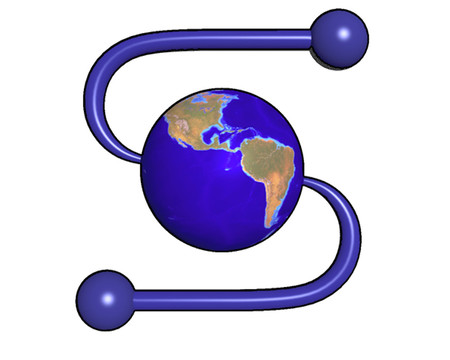
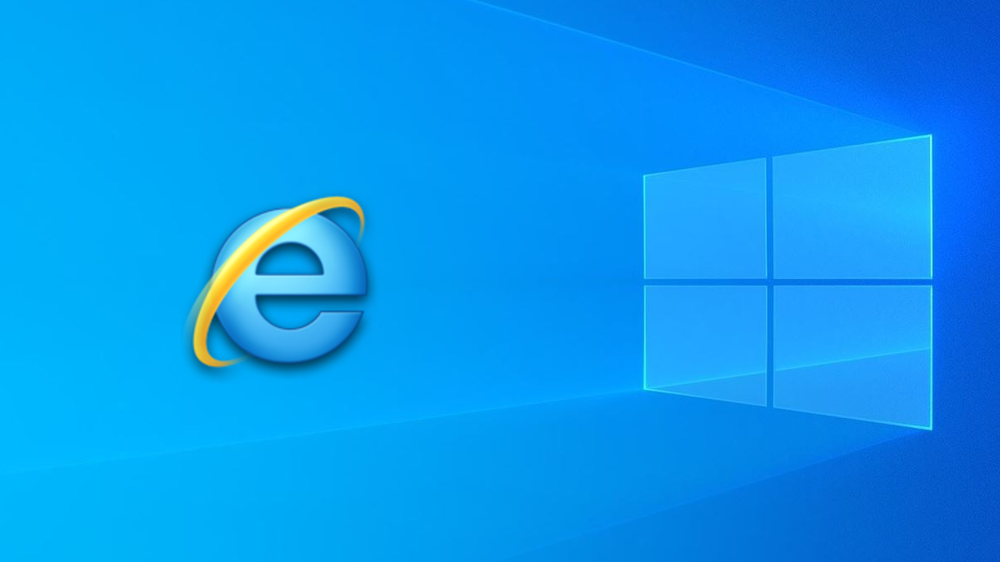
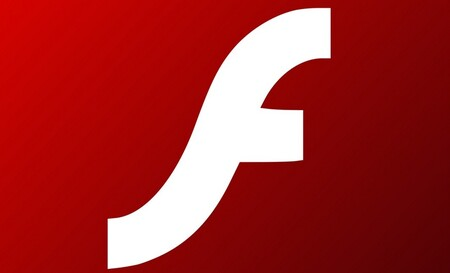

1991 - Navegadores
En 1991, Tim Berners-Lee creó el primer navegador web llamado WorldWideWeb (más tarde renombrado como Nexus). Navegadores de solo texto, bastante rápidos ya que es de sólo lectura, el usuario no puede interactuar con el contenido de la página, estando limitado a lo que el Webmaster sube.
Este navegador permitía a los usuarios ver páginas web que estaban escritas en HTML (HyperText Markup Language), el lenguaje de marcado estándar para crear páginas web en ese momento. Sin embargo, este navegador era solo para uso interno en CERN (Organización Europea para la Investigación Nuclear), donde Berners-Lee trabajaba.

1991 - WorldWideWeb (WWW)
El concepto de WWW fue diseñado por Tim Berners-Lee y algunos científicos del CERN (Conseil Européen pour la Recherche Nucléaire) en Ginebra. Berners-Lee ideó un sistema de hipertexto que permitía a los usuarios acceder y compartir documentos vinculados entre sí a través de Internet.
La WWW fue un hito importante en la historia de Internet, ya que permitió a los usuarios acceder y compartir información a través de una interfaz gráfica fácil de usar.

1993 - Mosaic
Marc Andreessen desarrolla Mosaic, el primer navegador web gráfico. Permitía a los usuarios visualizar páginas web con texto, imágenes y enlaces en una interfaz gráfica fácil de usar. Fue revolucionario porque facilitó la navegación por Internet.
Mosaic fue significativo porque permitió la visualización de imágenes y texto en la misma página, lo que mejoró enormemente la experiencia del usuario en comparación con los navegadores anteriores que solo mostraban texto. El lanzamiento de Mosaic ayudó a popularizar la World Wide Web entre el público en general.
1995 - PHP
Rasmus Lerdorf puso a disposición el lenguaje PHP, desempeñó un papel significativo al proporcionar a los desarrolladores una herramienta poderosa y fácil de usar para la creación de aplicaciones web dinámicas e interactivas.
PHP se convirtió en uno de los lenguajes de programación más populares para el desarrollo web del lado del servidor debido a su facilidad de uso y su capacidad para integrarse con HTML.PHP permitió a los desarrolladores web crear sitios web dinámicos que podían interactuar con bases de datos y realizar otras tareas complejas en el servidor.

1996 - Explorer
Internet Explorer con soporte de CSS. Permitió utilizar hojas de estilo para controlar el aspecto y la presentación de sus sitios web de una manera más eficiente y flexible.
Internet Explorer se convirtió en el navegador dominante durante la era de la Web 1.0 debido a su integración con el sistema operativo Windows y su distribución masiva con nuevas computadoras personales.
1997 - Flash
Adobe Flash era una tecnología dominante para la creación de contenido interactivo y multimedia en los sitios web, permitiendo a los desarrolladores crear experiencias web más ricas y dinámicas.
Flash permitió a los desarrolladores crear animaciones interactivas, juegos y contenido multimedia que podían integrarse en páginas web. Durante la era de la Web 1.0, Flash se convirtió en una tecnología popular para agregar elementos dinámicos y visualmente atractivos a sitios web.
